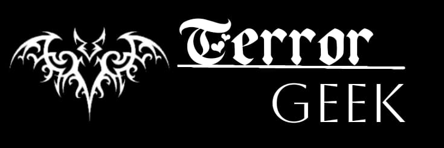

|  |
|---|
Com episódios de apenas 4 minutos, temos aqui uma apresentação artística única, embora controversa. Geralmente apresentada por um personagem não oficial a quem muitos fãs chamam carinhosamente de Narrador-san, a maioria dessas histórias de tamanho reduzido explora alguns aspectos do terror que muitas vezes se aprofundam no surreal e metafísico com finais bastante abruptos, bem ao estilo de Junji Ito. No entanto, há alguns episódios e, melhor ainda, temporadas inteiras, que às vezes divergem do tom esperado, contando certas histórias que enfatizam muito mais a tragédia ou até mesmo a fofura do que o horror.
O efeito ainda é notável, independentemente dessas mudanças alarmantes, pois a maioria dessas histórias faz com que os espectadores parem e reflitam sobre as mensagens, muitas vezes complexas. Aqueles que são apreciadores da cultura japonesa vão identificar as muitas referências que abundam na maioria dos contos e cujos significados, às vezes, dependem de um certo grau de compreensão.